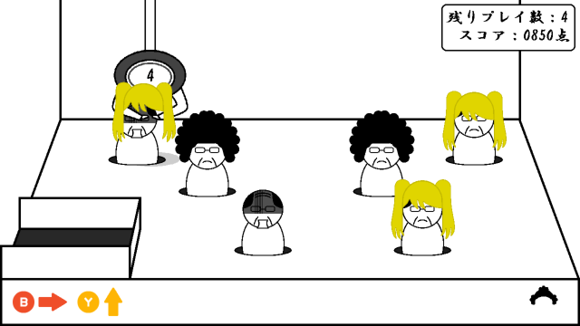
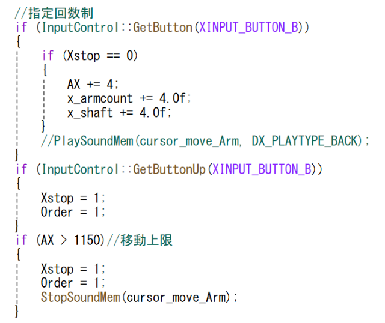
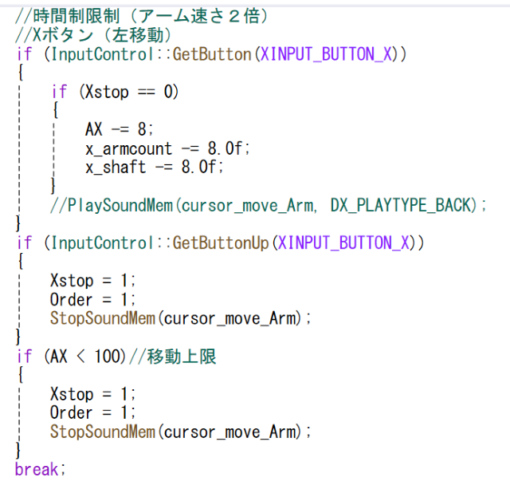
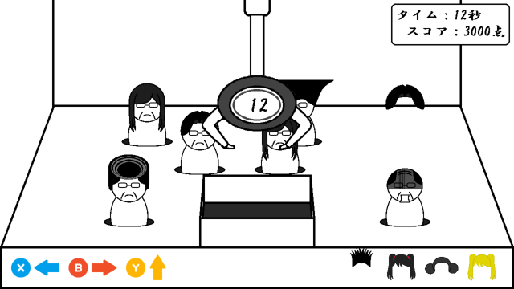
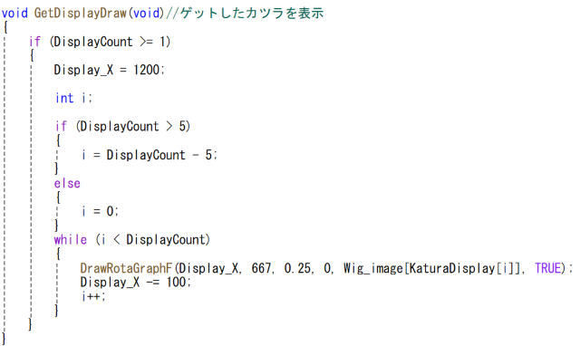

作品概要
こちらのゲームは5回クレーンを動かして、獲得したカツラの合計点数をより高くすることをめざすゲームです。
カツラの種類によって点数が違うので様々なカツラを取りより高い点数のカツラを見つけるのがカギです。
また、同じカツラを連続で２回とるたび、ボーナスがつくのでうまく活用していきましょう。


こちらのゲームは5回クレーンを動かして、獲得したカツラの合計点数をより高くすることをめざすゲームです。
カツラの種類によって点数が違うので様々なカツラを取りより高い点数のカツラを見つけるのがカギです。
また、同じカツラを連続で２回とるたび、ボーナスがつくのでうまく活用していきましょう。

シミュレーションゲーム
Visual Studio/C++
2025/4月～6月
4人
メインオブジェクト,あたり判定、追加ステージの作成
https://drive.google.com/file/d/1oCv9N023sXI1sR48mYTvpLGCoJYMQ7bs/view?usp=sharing
できるだけシンプルなゲームを基盤とし、チーム内で改良しながら制作したほうがチーム内の方向が一緒にできると思い、
3DSのバッチとれ～るセンターのクレーンゲームをもとにした、操作性が伝わりやすく、爽快なゲームを作ってみたいと思い企画しました。
現在の進捗状況を意識して、報連相を徹底するように立ち回った。
自身のタスクをこなしながら他の人の状況を聞いて、手伝ったりしてできるだけ足並みをそろえるように取り組みました。
もしかしたら、クレーンの動きを早くすればより面白くなるのでは？と思い、作ってみたのが完成したので実装しました。
より面白くするため、アームの速さ、アームの動かせる距離などを工夫しました。


最大５つのカツラを表示させるために、他のUIにかぶらないように、遊ぶ側の視点の妨げにならないように配置を工夫しました。
また、追加ステージでは6つ以上獲得するので、6つ以上になるときは一番古いカツラを削除するように工夫しました。


今回の制作を通じて期限までに完成させる自身の根気強さ、より面白くするための発想力が鍛えられたと思います。
また、個人での進捗状況によってスケジュールが変動するのでこまめな報連相が大事だとまなべました。